Self-Evolving Search Index – Khi index tự học cách để được tìm thấy
Tóm tắt paper arXiv:2609.19656
– Self-Evolving Search Index (Sangam Lee, Wonjae Lee, Sunghwan Kim, Deogyong Kim, Jaehoon Kim, Daye Nam, SeongKu Kang, Dongha Lee;
Yonsei University, Samsung Research, UC Irvine, Korea University). Nộp ngày 17/09/2026, chuyên mục cs.IR / cs.AI, ghi chú “Work in progress”.
Hầu hết dự án RAG / AI agent mà chúng ta làm đều có chung một “điểm nghẽn thầm lặng”: tài liệu có câu trả lời,
nhưng retriever không tìm ra vì cách tài liệu được đánh index không khớp với cách người dùng hỏi.
Paper này đề xuất Self-Index: để chính một LLM tự chẩn đoán index đang yếu ở đâu, tự viết lại các “index key”,
tự kiểm định, rồi lặp lại – không cần người gán nhãn, không cần retrain retriever, không sửa nội dung tài liệu.
Kết quả chính: trên benchmark BRIGHT, nDCG@10 trung bình tăng +38.8% đến +57.0% tùy retriever, trong khi phương pháp tốt nhất trước đó chỉ tăng ~9–13%.
Ứng dụng xuôi dòng: search agent trả lời đúng hơn và gọi search ít hơn; hệ thống memory của agent truy xuất kinh nghiệm cũ tốt hơn (+9.2% đến +13.9%).
Bài học cho Scuti: một vòng lặp “đo → chẩn đoán → sửa có chọn lọc → kiểm định” áp dụng được ngay cho các dự án RAG tài liệu tiếng Nhật của khách hàng.
Mục lục
Bối cảnh: index key là gì và vì sao quan trọng?
Đóng góp chính của paper
Phương pháp: Optimizer (3 bước) + Query Simulator
Kết quả thực nghiệm
Phân tích: thành phần nào thực sự quan trọng?
Giới hạn và điểm cần đọc kỹ
Bài học cá nhân & cách áp dụng tại Scuti AI
Hướng dẫn nhanh: tự thử như thế nào?
Video demo
Kết luận & tài liệu tham khảo
1. Bối cảnh: index key là gì và vì sao quan trọng?
Khi một retriever (BM25 hay embedding) tìm tài liệu, nó không so câu hỏi với “ý nghĩa” của tài liệu,
mà so với những gì được đưa vào index để đại diện cho tài liệu đó. Paper gọi các đại diện này là index key.
Mặc định, key duy nhất chính là văn bản gốc (hoặc chunk). Mỗi tài liệu d có một tập key K(d),
và điểm của tài liệu cho câu hỏi q là điểm của key khớp nhất:
score(q, d) = max over k in K(d) of rel(q, k) // rel = cosine similarity hoặc BM25
Ý tưởng “làm giàu index” không mới: Doc2Query sinh câu hỏi giả cho mỗi tài liệu, Anthropic có Contextual Retrieval (thêm ngữ cảnh/tóm tắt),
EnrichIndex thêm mục đích + tóm tắt + QA, SPIKE thêm “kịch bản” người dùng… Vấn đề paper chỉ ra là:
Không có chiến lược cố định nào thắng ở mọi môi trường. Kiểu corpus (văn bản, code, toán, bảng) và kiểu retriever (sparse/dense) “thích” những dạng key khác nhau. Ví dụ trong paper: Doc2Query giúp BM25 trên bảng tăng mạnh nhưng làm giảm hiệu quả trên code, và làm giảm điểm trung bình với retriever dense.
Việc tinh chỉnh vẫn do con người làm: người phải xem truy vấn nào hỏng, đoán key nào có lỗi, sửa prompt/chiến lược (hoặc gán nhãn thêm để train lại), rồi chạy lại toàn bộ corpus – tốn công và tốn tiền, và phải lặp lại mỗi khi xuất hiện lỗi mới.
Câu hỏi của paper: Có thể để index tự tiến hóa theo môi trường truy xuất của nó – tự tìm lỗi, tự sửa đúng chỗ cần sửa, tự kiểm định – mà không cần người can thiệp và không cần nhãn relevance hay không?
2. Đóng góp chính của paper
Framework Self-Index – đưa mô hình “self-evolving” (vốn đã được dùng để LLM/agent tự cải thiện) vào bài toán tối ưu index. Index tự chẩn đoán và tinh chỉnh các key của mình theo nhiều nhu cầu truy xuất khác nhau.
Hiệu quả nhất quán trên nhiều môi trường: 3 retriever (BM25, BGE-Large, Qwen3-Embedding-8B) × 4 loại corpus (văn bản tự nhiên, code, toán, bảng) – Self-Index đạt điểm trung bình cao nhất ở mọi loại corpus với mọi retriever, vượt Doc2Query, SPIKE, RL-Index, EnrichIndex.
Lợi ích lan sang ứng dụng xuôi dòng: search agent (BrowseComp-Plus) chính xác hơn, ít lần gọi search hơn, chi phí online thấp hơn; agent memory (LongMemEval-V2) truy xuất kinh nghiệm cũ tốt hơn.
3. Phương pháp: Optimizer (3 bước) + Query Simulator
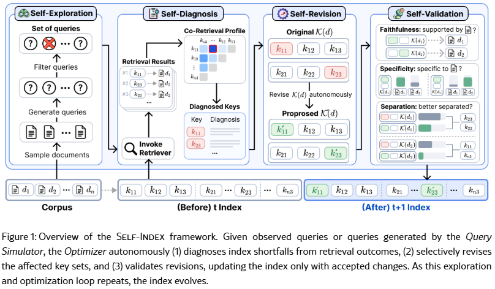
Ảnh 1 – Figure 1 gốc của paper: Self-Exploration → Self-Diagnosis → Self-Revision → Self-Validation, index đi từ phiên bản t sang t+1.
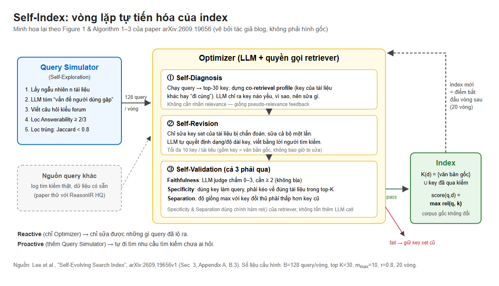
Ảnh 2 – Sơ đồ tự vẽ (HTML/SVG → PNG) giải thích vòng lặp bằng tiếng Việt, kèm tham số cấu hình thật trong paper.
3.1. Nguyên tắc nền tảng
Không sửa tài liệu, chỉ sửa “cửa vào”: văn bản gốc luôn được giữ làm một key cố định, không bao giờ bị sửa hay bị kiểm định. Các key sinh thêm được thêm/xóa/viết lại.
Max-score thay vì trộn trọng số: các phương pháp trước (SPIKE, EnrichIndex) phải chọn/tune trọng số để trộn điểm nhiều biểu diễn. Self-Index lấy max, nên bớt một tham số con người phải chỉnh.
Giới hạn ngân sách: mỗi tài liệu tối đa 10 key (kể cả key văn bản gốc).
3.2. Optimizer – vòng lặp 3 bước
Optimizer là một LLM (trong thí nghiệm chính: Qwen3.6-35B-A3B) được quyền gọi retriever và sửa key. Mỗi vòng nhận một lô 128 câu hỏi, lấy top-30 key cho mỗi câu.
Bước
Làm gì
Điểm tinh tế
① Self-Diagnosis (tự chẩn đoán)
Chạy các câu hỏi qua index hiện tại. Với mỗi key được trả về, dựng một co-retrieval profile: những key của tài liệu khác hay xuất hiện cùng nó, và tần suất. LLM đọc tài liệu + key hiện tại + profile này rồi trả về JSON: key nào có vấn đề, nguyên nhân, và nên sửa theo hướng nào (chưa viết key mới).
Không cần nhãn đúng/sai – lấy cảm hứng từ pseudo-relevance feedback (Rocchio). Co-retrieval cho biết key “không phân biệt được” tài liệu này với tài liệu nào.
② Self-Revision (tự sửa có chọn lọc)
Chỉ các tài liệu bị chẩn đoán có lỗi mới được sửa. Sửa cả tập key của tài liệu một lần mỗi vòng (tránh key trùng ý nhau). LLM được xem “competing keys” – key của tài liệu đối thủ – để biết phải nhấn mạnh điểm khác biệt nào.
Không có chiến lược định sẵn: LLM tự quyết định dạng và độ dài key. Prompt yêu cầu viết “bằng lời của người tìm kiếm, không phải lời của tài liệu”.
③ Self-Validation (tự kiểm định)
Mọi key sinh ra (kể cả key được giữ lại) phải qua 3 bài kiểm tra. Key trượt bị loại; nếu không còn key mới nào qua, tập key cũ được giữ nguyên.
Hai trong ba bài kiểm tra dùng chính hàm relevance của retriever, không tốn thêm lời gọi LLM.
Ba tiêu chí kiểm định (dựa trên các nguyên tắc kinh điển của Salton về “key tốt”):
Faithfulness (trung thực): một LLM judge chấm 0–3 xem tài liệu có thực sự đáp ứng nhu cầu mà key mô tả không; cần ≥ 2. Chặn key “bịa”.
Specificity (đặc thù): dùng chính key làm câu hỏi, tìm trên toàn corpus; tài liệu nguồn phải nằm trong top-K. Nếu key quá chung chung (nhiều tài liệu khác khớp hơn), key bị loại.
Separation (tách biệt): độ giống lớn nhất giữa key mới và các key đối thủ phải thấp hơn của tập key hiện tại. Tức là key mới phải giúp tài liệu “tách khỏi đám đông”, không làm nó giống đối thủ hơn.
3.3. Query Simulator – từ “phản ứng” sang “chủ động”
Nếu chỉ có Optimizer, index chỉ sửa được những lỗi mà các câu hỏi hiện có làm lộ ra (reactive).
Query Simulator chủ động đi tìm nhu cầu tìm kiếm chưa ai hỏi (Self-Exploration):
Chọn ngẫu nhiên n tài liệu trong corpus.
Lần gọi LLM thứ nhất: tóm tắt “vấn đề/thắc mắc mà người chưa đọc tài liệu này sẽ gặp”, cấm dùng thuật ngữ chuyên môn và tên riêng của tài liệu.
Lần gọi thứ hai: đóng vai người đó, viết m câu hỏi kiểu đăng forum – không được xem tài liệu gốc, để tránh chép lại từ ngữ của tài liệu.
Lọc Answerability (LLM judge ≥ 2/3: tài liệu có trả lời được không) và Dissimilarity (Jaccard theo tập từ < 0.8 so với mọi câu hỏi đã dùng).
Điểm đáng chú ý: trong thí nghiệm chính, toàn bộ câu hỏi dùng để tiến hóa index đến từ Query Simulator (20 vòng × 128 = 2.560 câu hỏi). Câu hỏi đánh giá hoàn toàn không được nhìn thấy trong lúc tối ưu – nên kết quả không phải do “học tủ” bộ test.
3.4. Ví dụ: một key tiến hóa qua các vòng
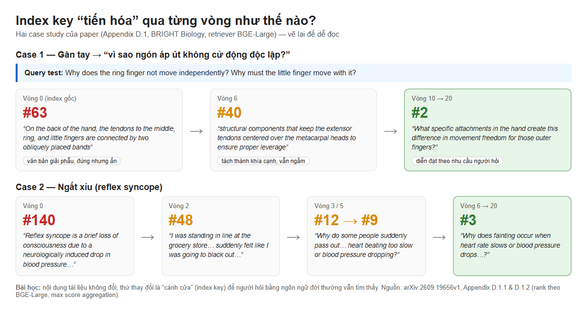
Ảnh 3 – Hai case study (Appendix D.1) vẽ lại: tài liệu đúng đi từ hạng #63 → #2 và #140 → #3 chỉ nhờ thay đổi key, nội dung tài liệu giữ nguyên.
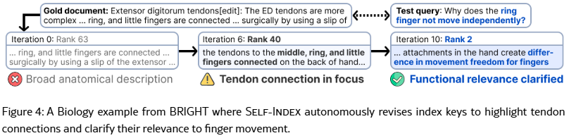
Ảnh 4 – Figure 4 trên paper (case study gốc).
4. Kết quả thực nghiệm
Paper trả lời 3 câu hỏi nghiên cứu: (RQ1) có hiệu quả trên nhiều corpus/retriever không, (RQ2) có giúp search agent không, (RQ3) có giúp memory của agent không. Thước đo truy xuất là nDCG@10.
4.1. RQ1 – Truy xuất trên BRIGHT (văn bản, code, toán) và bảng
Retriever
Index gốc (BRIGHT)
+ Self-Index
Mức tăng
Phương pháp tốt nhì
BM25
14.5
20.4
+40.4%
RL-Index +9.2%
BGE-Large
13.9
21.8
+57.0%
RL-Index +10.4%
Qwen3-Embedding-8B
18.8
26.1
+38.8%
SPIKE +12.8%
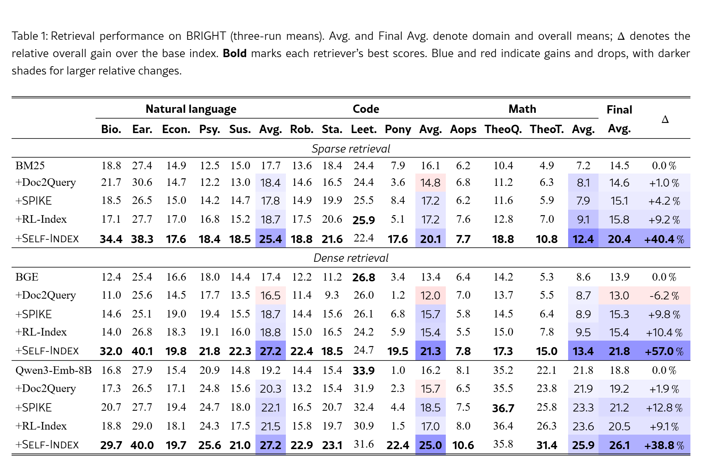
Ảnh 5 – Table 1 trên paper (trung bình 3 lần chạy). Hàng “+Self-Index” đậm/xanh ở hầu hết cột.
Với 3 bộ dữ liệu truy xuất bảng (Spider 2.0, FIBEN, BEAVER – tìm đúng bảng trong schema DB), trung bình tăng +49.1% (BM25), +17.9% (BGE), +16.2% (Qwen3-Emb), cao hơn EnrichIndex (+42.4%, +13.3%, +11.2%). Đáng chú ý: Doc2Query làm giảm điểm bảng với retriever dense (−3.2%, −7.1%) – minh chứng cho luận điểm “không có chiến lược cố định nào thắng mọi nơi”.
4.2. RQ2 – Search agent trên BrowseComp-Plus
4 agent backbone (GPT-OSS-120B, GPT-5.4-nano, Gemini-3.7-Flash, Kimi-K2.5) × 2 retriever. Agent, prompt, retriever, judge giữ nguyên; chỉ thay index.
Agent + Retriever
Accuracy gốc → Self-Index
Số lần gọi search
GPT-OSS-120B + BM25
31.08 → 58.92 (+89.5%)
21.16 → 16.62
GPT-5.4-nano + BM25
36.51 → 64.94 (+77.9%)
19.23 → 16.00
Gemini-3.7-Flash + BM25
61.93 → 76.02 (+22.8%)
11.20 → 8.84
Kimi-K2.5 + BM25
50.96 → 71.93 (+41.1%)
33.98 → 29.00
Kimi-K2.5 + Qwen3-Emb-8B
60.00 → 64.10 (+6.8%)
29.94 → 28.43
Self-Index đạt accuracy và evidence recall cao nhất ở cả 8 cấu hình, và giảm số lần gọi search ở cả 8 (SPIKE có lúc tăng).
Mức tăng lớn nhất khi retriever yếu (BM25); với retriever mạnh (Qwen3-Emb-8B) mức tăng nhỏ hơn (+3% đến +23%).
Ít lần gọi search → ít token → chi phí online thấp hơn. Agent GPT-5.4-nano + BM25 dùng Self-Index đạt accuracy tương đương cách tiếp cận DCI (agent đọc corpus trực tiếp, không index) nhưng rẻ hơn.
Khi mở rộng corpus từ 100K lên 400K tài liệu, Self-Index giữ accuracy ổn định và chi phí mỗi câu hỏi không tăng, trong khi SPIKE và đặc biệt DCI giảm accuracy và tăng chi phí rõ rệt (Figure 3).
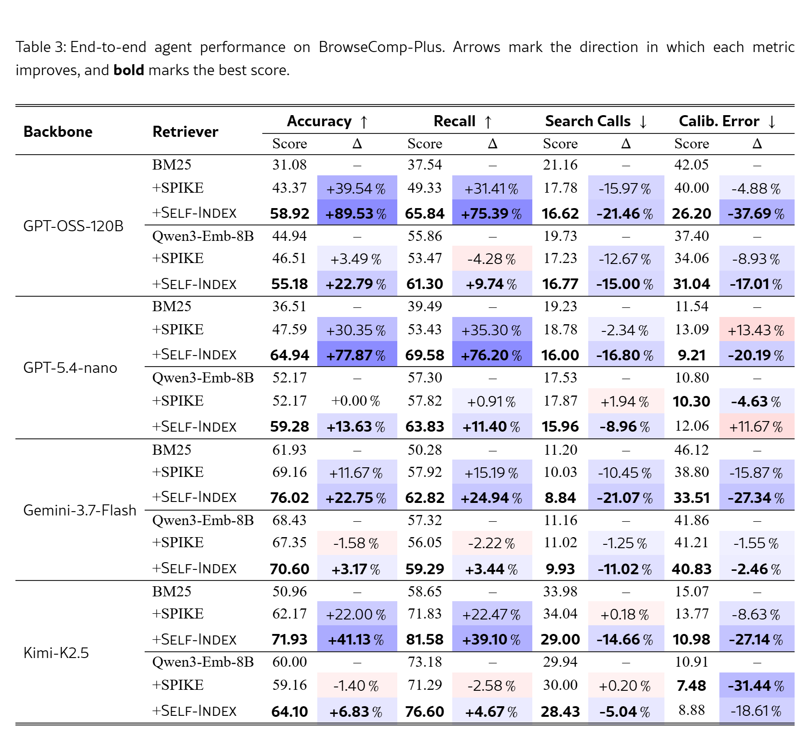
Ảnh 6 – Table 3 trên paper: kết quả end-to-end của search agent trên BrowseComp-Plus.
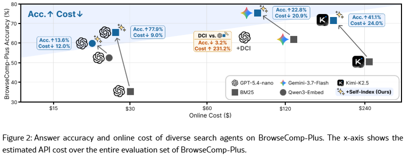
Ảnh 7 – Figure 2 trên paper (accuracy vs chi phí online).
4.3. RQ3 – Memory của agent (LongMemEval-V2)
Self-Index chỉ đổi key truy xuất, giữ nguyên nội dung memory. Kết quả accuracy tổng:
Hệ thống memory
Gốc
+ Self-Index
Tăng
Query → Slice
0.415
0.472
+13.9%
Query → Slice+Notes
0.448
0.503
+12.4%
AgentRunbook-R
0.532
0.581
+9.2%
Tăng đều ở các năng lực static / dynamic / workflow, nhưng không cải thiện nhóm “gotchas” (thậm chí giảm từ 0.276 xuống 0.241 với Query → Slice) – vì gotchas phụ thuộc vào cách memory được xây dựng hơn là cách nó được truy xuất.
Một case study rất “đời”: agent cần quy trình offboarding nhân viên trên ServiceNow cho người A; memory chỉ có trải nghiệm offboarding người B. Key mới “automated employee offboarding hardware unassignment workflow” giúp tìm ra trải nghiệm cũ dù tên người khác nhau, và agent chọn đúng quy trình.
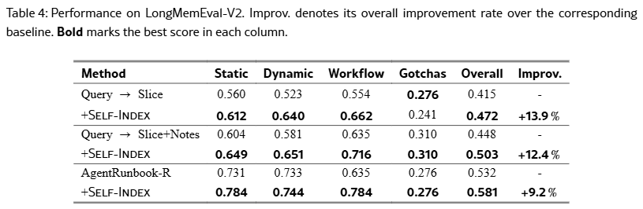
Ảnh 8 – Table 4 trên paper: kết quả trên LongMemEval-V2.
4.4. Chi phí offline
Vì chỉ sửa tài liệu có vấn đề (thay vì sinh key cho toàn corpus như SPIKE), chi phí LLM thấp hơn rõ rệt (giá Qwen3.6-35B-A3B: $0.07 input / $0.70 output mỗi triệu token):
Dataset (BGE-Large)
SPIKE: nDCG@10 / chi phí
Self-Index sau 20 vòng
Tiết kiệm
Biology
14.62 / $14.37
32.09 / $3.83
73.3%
Robotics (code)
14.40 / $11.74
22.58 / $3.26
72.3%
TheoremQA-Theorem (toán)
6.35 / $10.11
14.65 / $8.85
12.5%
5. Phân tích: thành phần nào thực sự quan trọng?
Bỏ thành phần
NL (26.6)
Code (22.1)
Math (17.2)
Ý nghĩa
Co-retrieval profile
−6.9
−5.4
−1.3
Chẩn đoán cần nhìn “hàng xóm” của key, không chỉ tài liệu.
Toàn bộ Self-Validation
−10.5
−9.1
−5.3
Chấp nhận mọi đề xuất của LLM → tệ hơn cả index gốc.
Faithfulness
−5.6
−4.0
−1.7
Mỗi tiêu chí đều đóng góp.
Specificity
−6.0
−6.1
−4.3
Separation
−2.7
−5.3
−5.1
Dissimilarity filter (Query Simulator)
−4.4
−3.6
−2.4
Câu hỏi phải đa dạng thật sự.
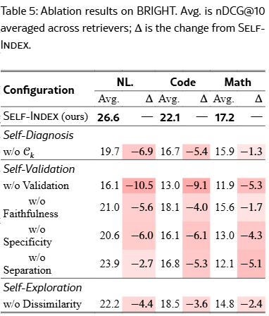
Ảnh 9 – Table 5 (ablation) trên paper.
Nguồn câu hỏi: thay Query Simulator bằng bộ câu hỏi tổng hợp có sẵn (ReasonIR HQ) vẫn cải thiện so với gốc (NL 18.1 → 24.3), nhưng Query Simulator tốt hơn ở mọi loại corpus (NL 26.6, Code 22.1, Math 17.2). Nghĩa là Optimizer cũng chạy được với log truy vấn thật của người dùng.
Tiến hóa dần dần: chỉ sau vài vòng Self-Index đã vượt SPIKE, và tiếp tục tăng đến vòng 20 (Figure 6).
LLM backbone: model 0.8B quá yếu (giảm điểm trên 3/5 dataset); từ 9B trở lên đều cải thiện; Qwen3.6-35B-A3B tốt nhất (22.4), model 304B không tốt hơn (19.9). Model to hơn không đồng nghĩa với index tốt hơn.
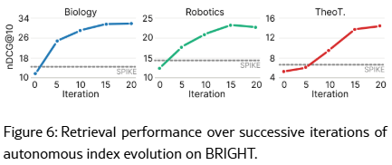
Ảnh 10 – Figure 6: nDCG@10 qua các vòng tiến hóa (đường nét đứt là SPIKE).
6. Giới hạn và điểm cần đọc kỹ
Paper là bản v1, tự ghi “Work in progress”, chưa qua peer review.
Không phải mọi ô đều thắng: ví dụ trên LeetCode, Self-Index thấp hơn index gốc với BM25 (22.4 vs 24.4) và BGE (24.7 vs 26.8); trên Spider 2.0 + BM25, EnrichIndex cao hơn (44.0 vs 42.3). Paper khẳng định thắng về điểm trung bình theo loại corpus, không phải từng dataset.
Mức tăng nhỏ đi khi retriever đã mạnh (Qwen3-Emb-8B trên BrowseComp-Plus: +3% đến +23% accuracy).
Chi phí offline chỉ tính tiền token theo bảng giá API, không gồm chi phí GPU/hosting; dataset toán tiết kiệm ít (12.5%).
Corpus trong thí nghiệm là tĩnh; paper không đánh giá tình huống tài liệu thay đổi liên tục.
7. Bài học cá nhân & cách áp dụng tại Scuti AI
Ở Scuti, phần lớn dự án AI cho khách hàng Nhật là chatbot/RAG trên tài liệu nội bộ (仕様書, マニュアル, FAQ, ticket, schema DB) và gần đây là agent tự động hóa nghiệp vụ.
Đọc paper này, mình rút ra mấy điều thay đổi cách mình làm việc:
7.1. Bài học rút ra
Lỗi RAG thường nằm ở “cửa vào”, không phải ở LLM. Trước đây khi chatbot trả lời sai, phản xạ là sửa prompt hoặc đổi model. Paper cho thấy chỉ đổi index key (không đổi retriever, không đổi tài liệu) đã tăng accuracy của agent tới +78–90%. Lần sau mình sẽ kiểm tra retrieval trước.
“Viết key bằng lời của người hỏi” – điều này đặc biệt đúng với khách hàng Nhật: người dùng cuối hỏi bằng tiếng Nhật đời thường (「パスワードを忘れた時どうする？」) trong khi tài liệu viết thuật ngữ kỹ thuật hoặc tiếng Anh. Khoảng cách từ vựng này chính là thứ Self-Index thu hẹp.
LLM sinh nội dung mà không kiểm định thì tệ hơn không làm gì. Ablation bỏ Self-Validation cho kết quả dưới cả index gốc. Bài học áp dụng cho mọi pipeline LLM ở công ty: tóm tắt tài liệu, sinh test case, dịch spec… đều cần một “cổng kiểm định” có tiêu chí rõ ràng.
Sửa có chọn lọc rẻ hơn sửa toàn bộ. Chỉ đụng vào tài liệu có vấn đề giúp tiết kiệm 72–73% chi phí so với sinh lại cho toàn corpus. Tư duy này giống “fix theo bug report” thay vì “refactor toàn bộ”.
Tín hiệu co-retrieval là công cụ debug miễn phí. Những tài liệu luôn “đi cùng nhau” trong kết quả tìm kiếm thường là tài liệu trùng lặp, tài liệu phiên bản cũ/mới, hoặc tài liệu có key quá chung chung – rất hữu ích khi dọn dẹp knowledge base của khách.
Tách bộ test khỏi dữ liệu tối ưu. Paper không dùng câu hỏi đánh giá khi tối ưu. Khi báo cáo cho khách Nhật (vốn rất coi trọng số liệu và tính khách quan), mình cũng nên giữ một bộ câu hỏi test cố định để so trước/sau.
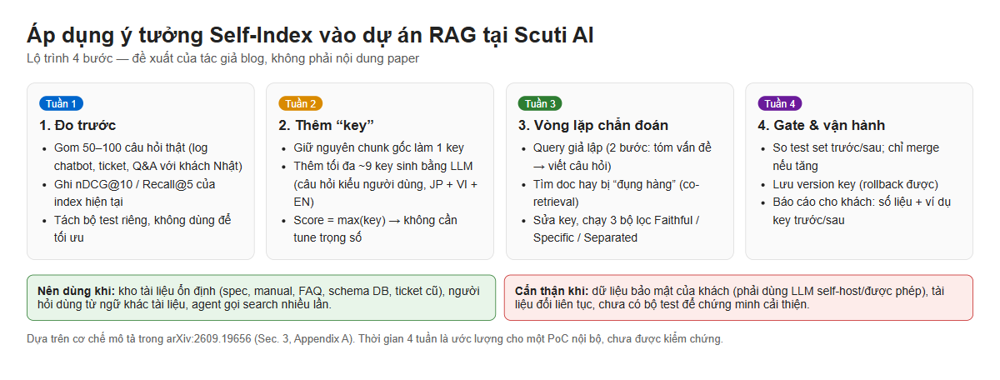
Ảnh 11 – Lộ trình 4 tuần đề xuất cho một PoC nội bộ (đề xuất của người viết, không phải nội dung paper).
7.2. Áp dụng vào dự án hiện tại
Tình huống tại Scuti
Áp dụng ý tưởng nào
Chatbot RAG tài liệu nội bộ cho khách hàng Nhật
Giữ chunk gốc + thêm key dạng câu hỏi (tiếng Nhật, tiếng Anh) trỏ về cùng doc_id; lấy max-score; dùng log câu hỏi thật làm query cho Optimizer.
Text-to-SQL / tìm bảng trong schema lớn
Paper có kết quả tốt trên Spider 2.0/BEAVER: thêm key mô tả “bảng này dùng để phân tích gì” (ví dụ case retention analysis) thay vì chỉ tên cột.
Agent tự động hóa (Claude Code, agent nghiệp vụ) có memory
Đánh index kinh nghiệm cũ theo quy trình (“offboarding + thu hồi thiết bị”) thay vì theo thực thể cụ thể (tên người, mã ticket).
Agent tìm kiếm nhiều bước (deep research)
Index tốt → ít lần gọi search → giảm token và chi phí API, quan trọng khi báo giá cố định cho khách.
7.3. Áp dụng vào vận hành hằng ngày
Knowledge base nội bộ (wiki dự án, Backlog, quy trình QA): mỗi tháng lấy các câu tìm kiếm “không ra kết quả” làm đầu vào, cho LLM đề xuất thêm key/tag, có người duyệt trước khi merge (phiên bản “human-in-the-loop” của Self-Validation).
Review đầu ra LLM theo 3 câu hỏi rút từ paper: có đúng với nguồn không (Faithful)? có đặc thù cho trường hợp này không (Specific)? có phân biệt được với cái tương tự không (Separated)?
Bảo mật dữ liệu khách hàng: vòng lặp cần LLM đọc toàn bộ tài liệu, nên với dự án có NDA chặt phải dùng model self-host (paper dùng Qwen3.6-35B-A3B mã nguồn mở – một lựa chọn khả thi) hoặc endpoint được khách cho phép.
8. Hướng dẫn nhanh: tự thử như thế nào?
8.1. Đọc paper hiệu quả (15 phút)
Mở trang abstract → bấm HTML (experimental) để đọc trên trình duyệt (có mục lục bên trái).
Xem Figure 1 + Section 3 để hiểu vòng lặp; Table 1, 3, 4 cho kết quả; Table 5 cho ablation.
Appendix A có nguyên văn các prompt (Self-Diagnosis, Self-Revision, Faithfulness judge, Query Simulator) – phần giá trị nhất nếu muốn tự cài đặt.
8.2. Chạy code chính thức
Theo README của repo (mình chưa chạy thử vì cần GPU, Java 21 cho BM25, và tải model/dataset lớn):
git clone --recurse-submodules https://github.com/augustinLib/Self-Index
cd Self-Index
bash setup.sh --cpu # bỏ --cpu nếu máy có CUDA
source venv/bin/activate
python run.py list
# Optimizer gọi LLM qua endpoint tương thích OpenAI, ví dụ vLLM:
vllm serve Qwen/Qwen3.6-35B-A3B --served-model-name qwen3.6-35b-a3b --port 8000 --max-model-len 262144
export LLM_BASE_URL=http://localhost:8000/v1
8.3. Phiên bản “mini” cho dự án RAG của mình
Pseudo-code tự viết (rút gọn từ Algorithm 1–3), dùng được với bất kỳ vector DB nào cho phép nhiều vector cùng trỏ về một doc_id:
for it in range(N_ITER):
queries = simulate_queries(sample(corpus, n)) # hoặc lấy từ log tìm kiếm thật
results = {q: retrieve_keys(q, top_k=30) for q in queries}
profiles = build_co_retrieval_profiles(results) # key nào hay "đi cùng" key nào
for doc in docs_hit_by(results):
diag = llm_diagnose(doc, keys[doc], profiles) # JSON: key lỗi + hướng sửa
if not diag.shortfalls: continue
proposal = llm_revise(doc, keys[doc], diag, competing_keys(doc)) # tối đa 10 key
passing = [k for k in proposal
if faithful(doc, k) >= 2 # LLM judge 0-3
and doc in search_docs(k, top_k=30) # Specificity
and max_sim(k, competing) < max_sim(keys[doc], competing)] # Separation
if any(k not in keys[doc] for k in passing):
keys[doc] = [doc.text] + passing # văn bản gốc luôn giữ lại
evaluate(test_queries) # bộ test riêng, không dùng ở trên
Mẹo khởi đầu: chưa cần đủ vòng lặp. Chỉ riêng bước “giữ chunk gốc + thêm vài key dạng câu hỏi + lọc bằng Specificity (key phải tìm lại được đúng tài liệu)” đã là một cải tiến rẻ, dễ đo, dễ giải thích cho khách hàng.
9. Video demo
Video ghi lại toàn bộ quá trình đọc paper: mở arXiv → bản HTML → lướt các Figure/Table chính → repo GitHub → các sơ đồ minh họa → blog hoàn chỉnh.
Self-Index biến việc tối ưu index từ một công việc thủ công, lặp đi lặp lại thành một vòng lặp tự động có kiểm soát:
chẩn đoán bằng tín hiệu truy xuất → sửa đúng chỗ → kiểm định nghiêm ngặt → chủ động tìm nhu cầu mới.
Kết quả ấn tượng nhất không chỉ là nDCG tăng, mà là search agent vừa đúng hơn vừa rẻ hơn.
3 việc nên làm ngay:
Thêm bước đo retrieval (Recall@k / nDCG@10 với bộ test cố định) vào mọi dự án RAG trước khi chỉnh prompt.
Thử “chunk gốc + key dạng câu hỏi + max-score + lọc Specificity” trên một dự án RAG tiếng Nhật đang chạy.
Đưa 3 tiêu chí Faithful / Specific / Separated vào checklist review nội dung do LLM sinh ra.